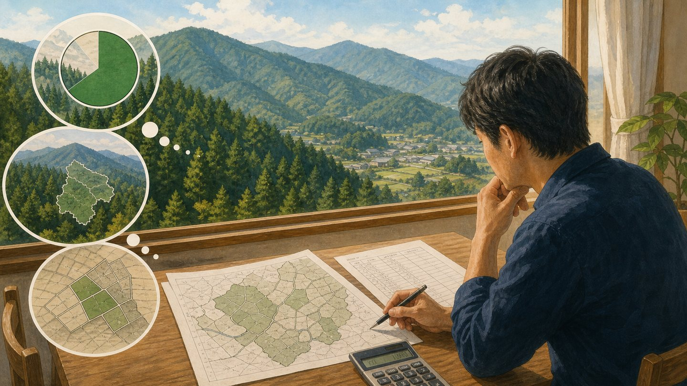
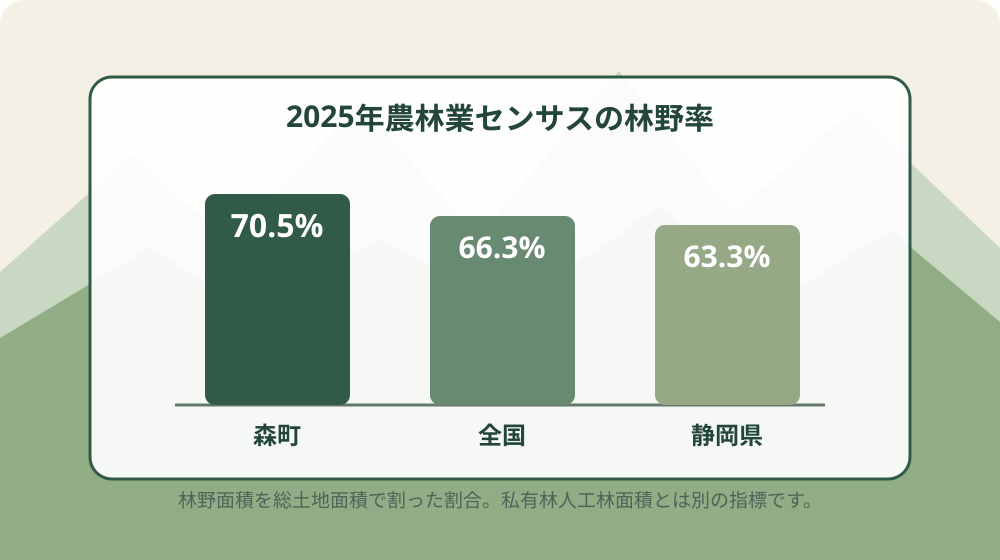
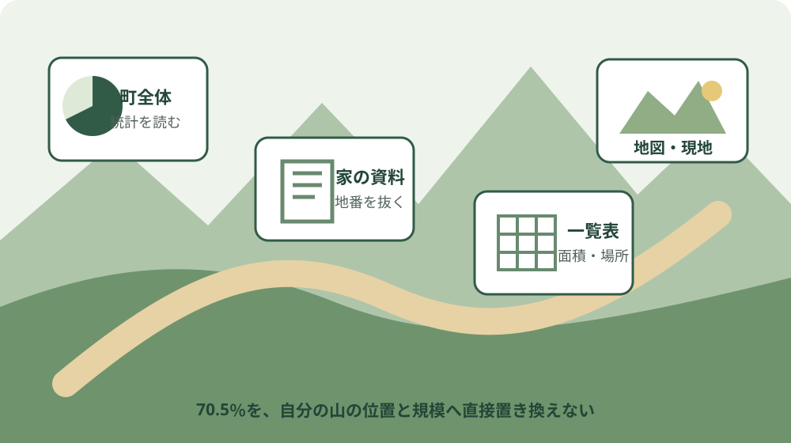

森町の林野率70.5％｜2025年センサス

この記事の表紙は、内容をもとに生成したイメージです。実在する場所・人物・資料を撮影したものではありません。
この記事の要点
Q. 森町の林野率70.5％から、相続した山の広さや場所は分かりますか。
A. 分かりません。70.5％は森町の総土地面積に占める林野面積の割合です。6,291haは町内の私有林人工林面積で、個人の所有面積ではありません。今日、納税通知書や登記資料から地番を一つ拾うことが最初の一歩です。
森町の山林を相続したものの、場所も広さも分からない。そんな家族にとって、林野率70.5％は大きすぎる数字です。
町の山が多いことは伝わります。けれども、その数字だけでは、自分の山へ行く道も境界も分かりません。
2025年農林業センサスの訂正版では、森町の林野率は70.5％です。私有林人工林面積は6,291haと掲載されています。
訂正版の公開日は2026年8月31日です。ただし、森町の行が訂正によって変わったとは確認できません。
記事では「2026年8月31日訂正版に載る値」と表現します。訂正前後で森町の値が変わったとは書きません。
この記事では、70.5％と6,291haを分けて読みます。そのうえで、町の統計を家族の確認作業へ翻訳します。
森町の林野率70.5％は町全体の数字
森町の林野率70.5％は、町の総土地面積に占める林野面積の割合です。相続した一筆の山林に掛ける数字ではありません。
農林水産省の「2025年農林業センサス農山村地域調査市区町村調査」に、森町の値が掲載されています。
該当する表は「市区町村別私有林人工林面積及び林野率」です。森町の行には、林野率70.5％とあります。
全国の林野率は66.3％です。静岡県は63.3％です。森町は全国より4.2ポイント高く、県より7.2ポイント高い値です。
ここで使う単位は「倍」ではなく「ポイント」です。70.5から66.3を引くと4.2ポイントになります。
森町の70.5％を全国66.3％で割ると、約1.06倍です。ただし、山の手入れが1.06倍必要という意味ではありません。
林野率が示すのは、町の土地構成です。管理費、所有者数、境界の本数、作業量までは示しません。
一つの統計値で分かる範囲を広げすぎないことが大切です。70.5％で一筆の状態は決まりません。

6,291haは私有林人工林の合計
森町の6,291haは、町内にある私有林人工林の面積です。林野全体の面積でも、相続した家族の所有面積でもありません。
1haは0.01平方キロメートルです。6,291haを換算すると62.91平方キロメートルになります。
約63平方キロメートルと聞けば、個人が一度に把握できる規模ではないことが分かります。町全体の集計値だからです。
農林水産省の表では、全国の私有林人工林面積は5,760,144haです。静岡県は203,320haです。
森町の6,291haを静岡県の203,320haで割ると、約3.1％です。県内の私有林人工林の一部が森町にあると読めます。
この約3.1％も、個人の所有割合ではありません。森町の所有者数や、一人当たり面積も導けません。
林野率70.5％の分子に6,291haを置くのも誤りです。林野率の分子は林野面積で、私有林人工林だけではありません。
ここが意外な事実です。同じ行に並ぶ70.5％と6,291haは、単純な割り算で結び付く数字ではありません。
表で隣り合っているため、6,291haが70.5％を作る分子に見えます。定義を読まないと、この誤解が起きます。
森町公式の林野面積とも分けて読む
森町公式サイトの「1 森町の自然」には、林野面積9,676haと掲載されています。農林水産省の6,291haとは対象が違います。
森町公式ページは、樹林地9,548haとも記載しています。森林の内訳として、人工林7,328ha、天然林2,220haを挙げています。
私有林人工林6,291haと、人工林7,328haは同じ数字ではありません。「私有林」という所有区分が加わるためです。
林野面積9,676haと樹林地9,548haも一致しません。林野と樹林地を同じ言葉として置き換えない方が安全です。
森町公式ページの町面積は133.84平方キロメートルです。面積の大きさを考える材料にはなります。
ただし、資料ごとに基準時点と区分を確認する必要があります。異なる資料の数字を混ぜ、独自の比率を公式値として見せてはいけません。
2025年農林業センサスの70.5％は、同じ表の定義で比較します。森町公式の面積値は、町の地形を知る補助線として使います。
統計から自分の山の位置は分からない
市区町村別の統計から、相続した山の地番や位置は分かりません。所有者名、境界、進入路も掲載されていません。
「森町は山が多い」と分かっても、「うちの山はどこか」という問いは残ります。この二つは別の調査です。
最初に探すのは、町全体の地図ではありません。家族の手元にある納税通知書、登記資料、売買や相続の書類です。
書類に地番が一つ見つかれば、確認の入口ができます。面積や地目が書かれていても、現地境界と同じとは限りません。
地番が複数ある場合は、一枚のメモに並べます。分かる地番と、位置が分からない地番を分けます。
山林の通称だけを聞いている家族もいます。通称は手掛かりですが、公的な地番と一致する保証はありません。
親族の記憶も捨てずに残します。ただし、「あの尾根の向こう」という説明だけで所有地を確定しません。
統計は町を見る道具です。地番は一筆を探す道具です。境界資料は隣接地との線を確かめる道具です。
道具ごとの役割を分ければ、70.5％という大きな数字に振り回されません。
相続後は所有者届出も確認する
森町公式サイトは、森林の土地の所有者届出制度を案内しています。対象森林を相続や売買で取得した方に関わる手続きです。
対象は、森林法第5条に基づく地域森林計画の対象となる民有林です。すべての山林が同じ扱いとは限りません。
森町の案内では、所有者となった日から90日以内の提出とされています。相続では前所有者の死亡日が起点です。
必要書類として、届出書、位置を示す地図、取得原因を証明する書面の写しが案内されています。
場所が分からないから、届出の確認も後回しにする。その順序では、期限だけが進みます。
山林を相続したら、場所が分からなくても90日届出を確認するでは、場所が不明な段階からの確認順序を整理しています。
制度の対象か分からない場合は、分からないまま森町の担当へ伝えます。地番が一つあれば、相談の材料になります。
届出を済ませたことと、境界が確定したことも別です。手続きを終えても、現地の線が自動で見えるわけではありません。
手放す話は位置確認の後
相続した山を持ち続けられないと考える家族もいます。その迷い自体は、責められるものではありません。
しかし、面積も位置も不明なまま、手放す方法だけを探しても判断材料が足りません。
山を国に引き取ってもらう道はあるかでは、相続土地国庫帰属制度を森町の山林に引き付けて整理しています。
制度を使うかどうかの前に、どの土地を話しているかをそろえます。地番、名義、面積、接道、境界の資料が必要です。
「山だから値段は付かない」「山だから国へ渡せる」と一括りにはできません。個別の土地条件を確認してから判断します。
売る、持つ、家族で管理する、別の方法を探す。結論を急ぐ前に、対象地を特定します。
境界は現地へ入る前に資料を探す
位置が分からない山林で、最初から現地の境界杭を探すのは負担が大きい作業です。山中の移動には危険も伴います。
畑と山の境界は、現地に立つ前に地籍調査の成果で確かめられるでは、森町で閲覧できる資料と確認順序を紹介しています。
森町公式サイトには、地籍調査の概要と成果の閲覧、交付に関する案内があります。実施済み区域かどうかも確認材料です。
地籍調査の成果があることと、現地ですべて解決することは同じではありません。資料の範囲や、その後の変更も確かめます。
公図、登記事項、地籍調査の成果、森林関係の図面は役割が違います。一枚だけを絶対視しません。
先に机上で候補地を絞れば、現地へ入る回数を減らせます。遠方の家族には、移動負担を減らす意味があります。

良い点：町の山の規模を比較できる
2025年農林業センサスの良い点は、森町、静岡県、全国を同じ表で比較できることです。
森町70.5％、静岡県63.3％、全国66.3％と並べれば、森町の林野率が県と全国を上回ることが分かります。
私有林人工林面積も、森町6,291ha、静岡県203,320ha、全国5,760,144haと同じ単位で確認できます。
数字が別々の資料に散らばっていないため、単位の取り違えを減らせます。市区町村名と数値が一行にまとまっています。
2026年8月31日訂正版であることが明示された点も良いところです。どの時点の表を見たか残せます。
町全体の土地利用を考える際、70.5％は基準になります。森林整備、担い手、移動、維持費を町の規模で考える入口です。
森町公式の森林整備計画と合わせれば、統計の量と、町が示す整備の方向を分けて読めます。
相続した家族にとっても、山林の確認が特殊な話ではないと分かります。町の土地の大きな部分が林野だからです。
注文したい点：一筆へ降りる情報が足りない
市区町村別統計だけでは、相続した一筆へ降りる情報が足りません。これは統計の欠陥ではなく、資料の役割の限界です。
森町70.5％という数字が目立つほど、個人の山林も分かったような気になります。実際には地番も名義も出てきません。
私有林人工林6,291haの内訳も、所有者ごとには読めません。分散した筆数や、進入できる道の有無も分かりません。
8月31日に訂正版が出たことから、森町の値も変更されたように読めます。森町の値が訂正対象だったとは確認できないため、その断定は避けます。
森町公式の林野面積9,676haと、国の私有林人工林6,291haが並ぶと、古い値と新しい値の差に見える場合があります。
実際は対象区分が違います。数字の差を、そのまま森林が減った量として扱うことはできません。
一事業者として欲しいのは、統計の数字を増やすことだけではありません。家族が地番確認へ進める案内が同じ場所にあると助かります。
町全体の数字を見た後、所有者届出、地籍調査、森林整備計画へ移れる導線があれば、調べ物の迷子を減らせます。
対案・結論：今日、地番を一つ拾う
森町の林野率70.5％を見た家族が2026年9月3日にできる一歩は、相続書類から山林の地番を一つ拾うことです。
全部の土地を一日で整理する必要はありません。最初の一筆を、所在地、地番、地目、面積、名義の欄に分けます。
分からない欄には「不明」と書きます。空欄のままだと、未確認なのか該当なしなのか区別できません。
納税通知書に複数の土地があれば、山林らしい地目だけを先に抜き出します。判断できなければ、全件を一覧にします。
次に、所有者届出の対象と期限を確認します。90日を過ぎた可能性があっても、放置せず担当へ状況を伝えます。
地番が分かれば、地図や地籍調査資料を探す入口になります。現地へ入るのは、その後です。
この順序なら、町全体の70.5％が、家族の一筆目へつながります。数字を眺めるだけで終わりません。
家族に残す山林カルテ
家族に残す記録は、山の通称だけでは足りません。所在地、地番、登記名義、面積、地目を並べます。
位置が分かる土地には、地図の保存先を書きます。位置が分からない土地は「未確認」と明記します。
境界資料の有無も分けます。公図、測量図、地籍調査の成果、古い手書き図を同じ名称でまとめません。
進入路については、車で入れるかを推測で書きません。確認日と、どこまで確かめたかを残します。
管理を頼んでいる人や森林組合などの連絡先があれば、本人の同意を得て共有します。
固定資産税、草刈り、見回り、移動に掛かった金額も年ごとに残します。所有の負担を家計の数字へ移せます。
売却、保有、家族管理の結論は別欄にします。資料整理の段階で、家族の結論を固定しません。
記録の目的は、すぐ処分することではありません。次に判断する家族が、最初から探し直さない状態を作ることです。
大石の視点
大石浩之（磐田市／不動産業）として、私はこう考えます。70.5％なんて町全体の話で、自分の山がどこに何haあるか分からない家族には、そのままじゃ役に立たない。
数字を否定しているのではありません。町の規模を示す数字を、一筆の確認へ翻訳しなければ実務にならないという話です。
私は、70.5％を記事の見出しに出すか迷いました。数字が強く、自分の所有地まで分かったように見えるからです。
それでも出すことにしました。森町70.5％、県63.3％、全国66.3％の差は、町の土地構成を知る入口になるためです。
ただし、ここは言い切ります。林野率70.5％から、相続した山の位置、面積、境界は一つも特定できません。
6,291haも家族の所有面積ではありません。町内の私有林人工林を合計した統計値です。
不動産の相談では、面積が書かれた資料だけで現地を断定しません。地番、名義、地図、道路、境界を順に重ねます。
山林も同じです。査定や処分方法の話へ急ぐ前に、どの土地を相続したかを確かめます。
森町の山を守ってきた人は、見回り、草刈り、境界の記憶、近隣との連絡を担ってきました。その負担を家族の善意だけに残せません。
担い手が替わるなら、記憶を地番一覧へ移す必要があります。移動時間と維持費も記録し、続けられる管理量を見ます。
森町に山が多いことは、可能性でもあります。同時に、所有者が位置を把握できない山が増えれば、維持は難しくなります。
大きな話をする前に、一筆目を確かめる。私は、その小さな作業が打開の始まりだと考えます。
まとめ
2025年農林業センサスの2026年8月31日訂正版では、森町の林野率は70.5％です。
森町の私有林人工林面積は6,291haです。約62.91平方キロメートルに当たります。
林野率の分子は林野面積です。私有林人工林6,291haを分子にして70.5％を計算するものではありません。
全国の林野率は66.3％、静岡県は63.3％です。森町は全国より4.2ポイント、県より7.2ポイント高い値です。
この比較から分かるのは町の土地構成です。相続した山の地番、名義、境界、進入路は別に調べます。
今日の一歩は、納税通知書や登記資料から地番を一つ拾うことです。分からない項目には「不明」と残します。
町全体の70.5％を、家族の一筆目へ降ろす。数字が初めて、相続後の段取りに変わります。
よくある質問
森町の林野率と私有林人工林面積について、相続した家族が混同しやすい三つの問いを整理します。
Q1. 森町の林野率70.5％は、相続した土地の70.5％が山林という意味ですか。
A1. いいえ。70.5％は、森町の総土地面積に占める林野面積の割合です。個人の土地へ掛ける数字ではありません。相続した土地の地目、面積、位置は、納税通知書や登記資料などで一筆ずつ確認します。
Q2. 私有林人工林6,291haは、森町の林野面積の合計ですか。
A2. いいえ。6,291haは、2025年農林業センサスに載る森町の私有林人工林面積です。林野全体や人工林全体と同じではありません。林野率70.5％の分子に6,291haを使うこともできません。
Q3. 相続した山の場所が分からないとき、最初に何を確認しますか。
A3. 納税通知書、登記資料、相続書類から地番を一つ拾います。分かる地番と位置不明の地番を一覧にし、森町の所有者届出と地籍調査資料を確認します。現地へ入る前に、書類と地図で候補地を絞ります。
出典・確認先
- 2025年農林業センサス 市区町村別私有林人工林面積及び林野率／農林水産省（2026年8月31日訂正版を2026年9月3日に確認）
- 2025年農林業センサス／農林水産省（訂正版の掲載状況を2026年9月3日に確認）
- 森林の土地の所有者届出制度について／静岡県森町（対象、90日以内、提出書類を2026年9月3日に確認）
- 1 森町の自然／静岡県森町（町面積、林野面積、樹林地、人工林、天然林を2026年9月3日に確認）
- 森町森林整備計画について（変更）／静岡県森町（計画の目的と対象を2026年9月3日に確認）

磐田市で小さな不動産業を営みながら、森町の空き家・農地・実家じまいのご相談を受けています。町全体の数字と、一筆ごとの確認を分けて案内します。
最終確認日：2026-09-03 ／ 本記事は公表情報と執筆者の見解を分けています。統計の区分や掲載値は更新される場合があります。個別の土地の名義、境界、相続手続きは、町の担当窓口や各専門家へ確認してください。